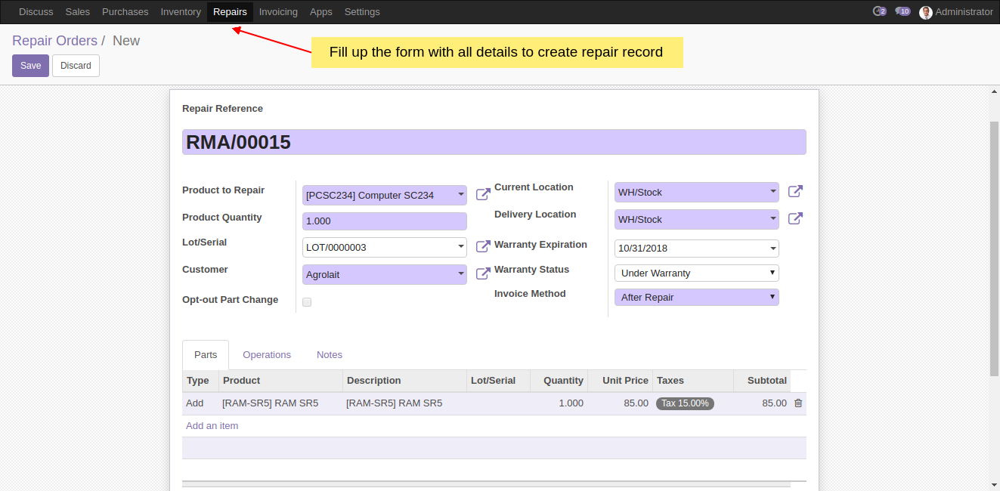
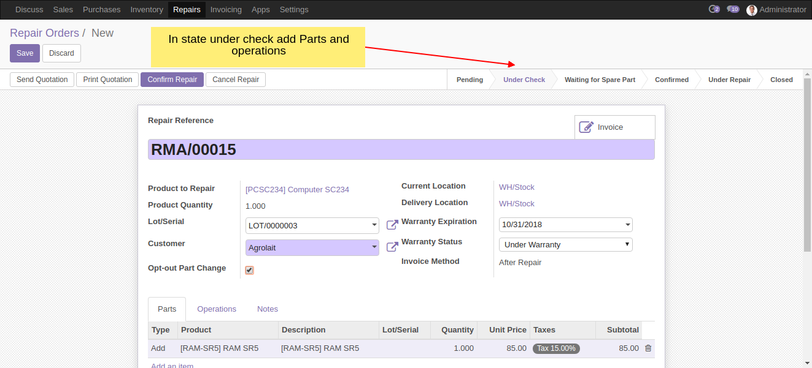
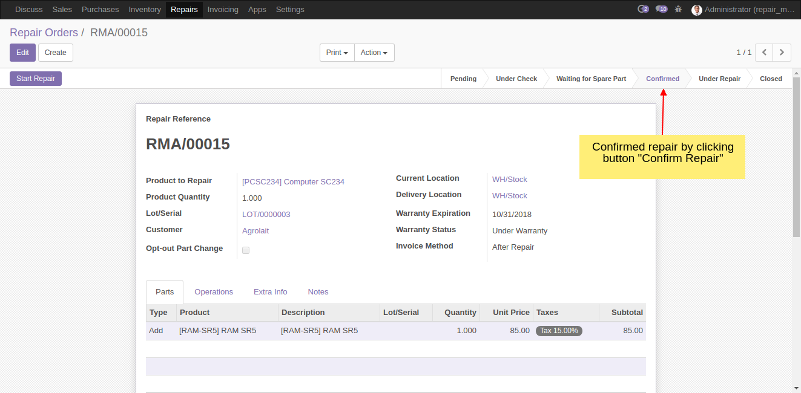
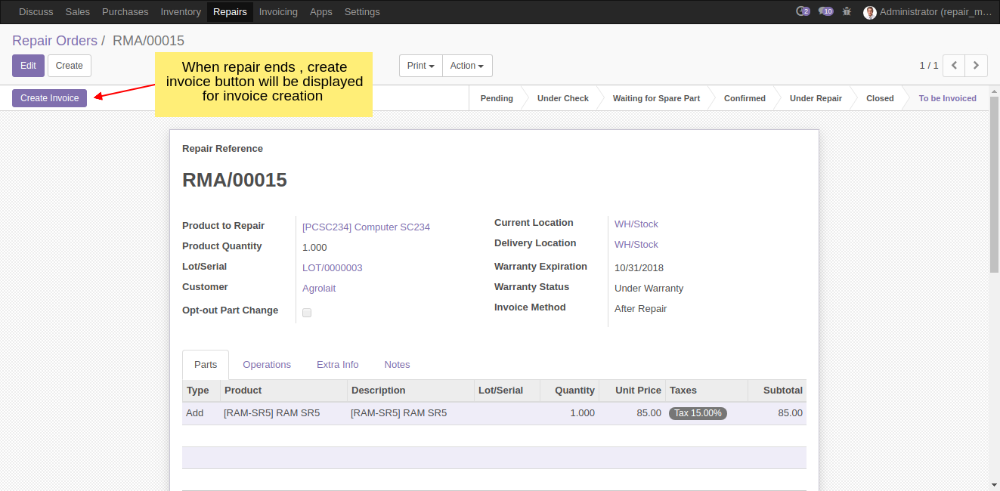
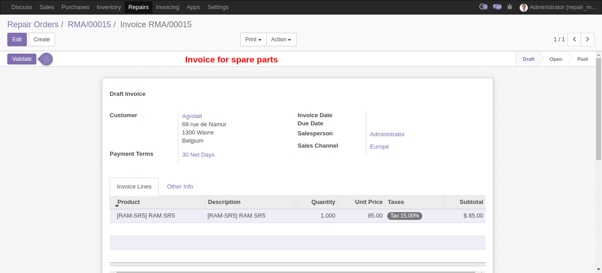
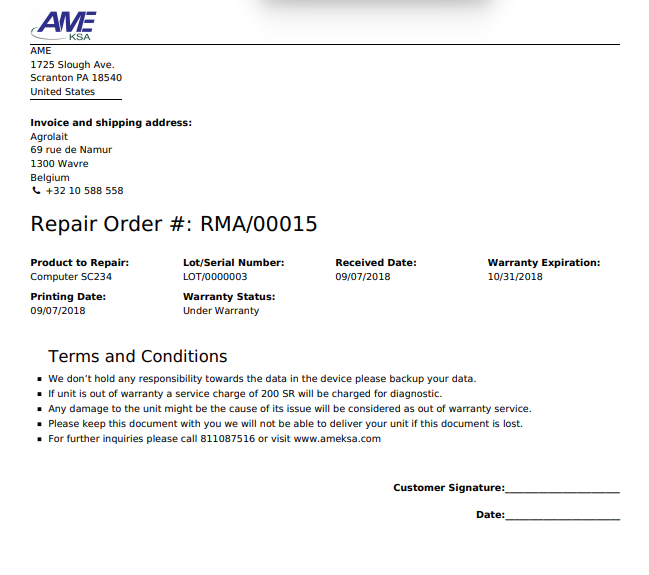

Repair Management
Create Repair Record
Create repair record under repair menu and fill up all the details in form view

Confirm Repair
Update the state to under check after filling up the form and in the case customer opted for part change check the b opt-out button and add spare parts & operations in the respective place.
Confirm repair order by clicking confirm button and it will create a record

Confirmed Repair Order

Start-End Repair
When repair is confirmed button “Start Repair” will appear and “End Repair” button will appear.
Once repair is ended. We have to create invoice based on spare parts and operations used.

Invoice Created

Service Report
In any states of repair management it is possible to print service report as follows. It contain information of service charge if the product is in out of warranty

Installing custom module in odoo addons